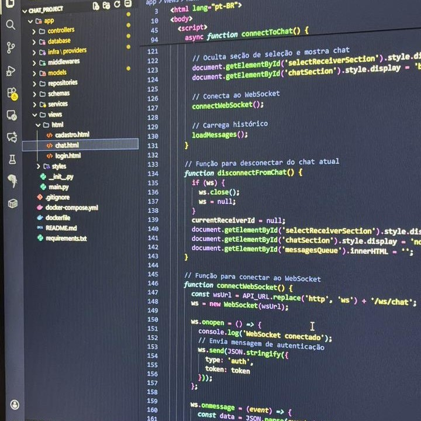
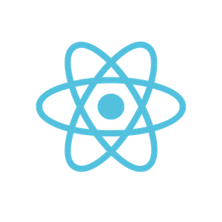
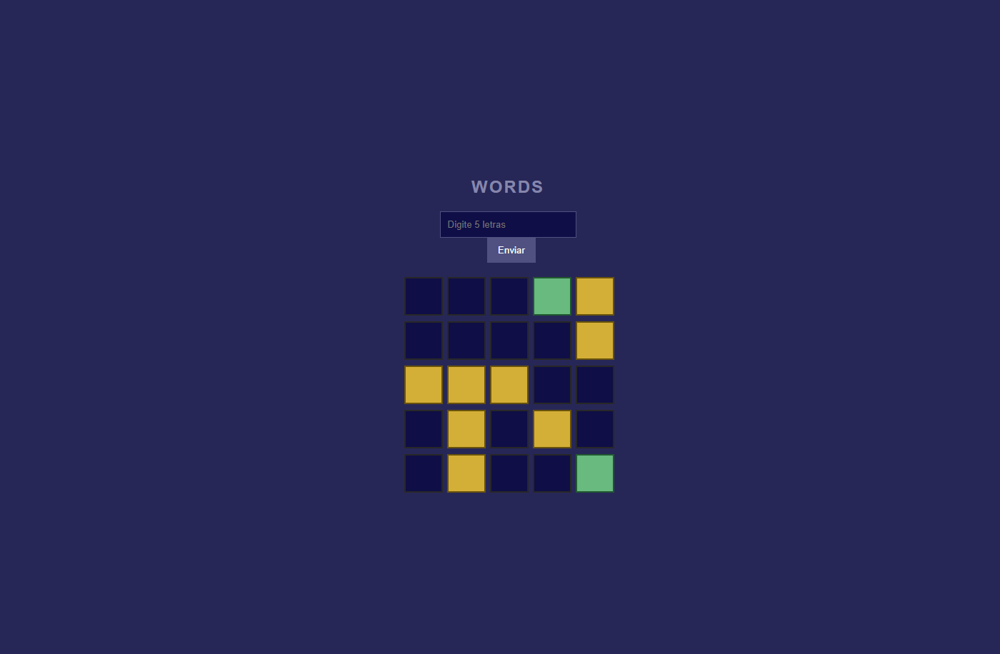
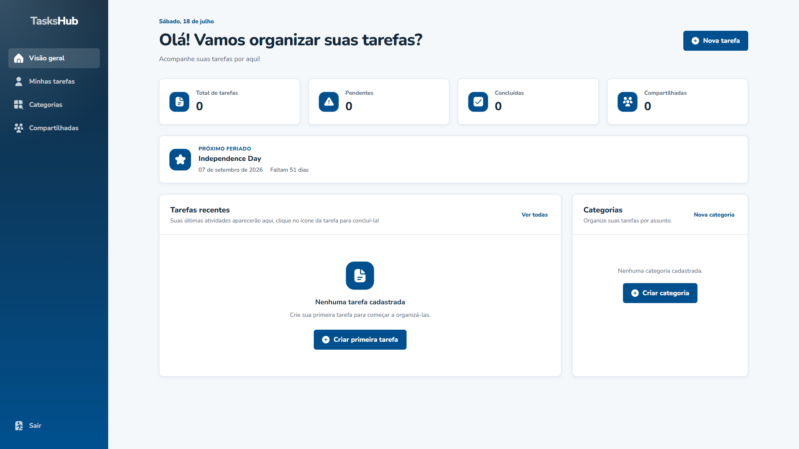
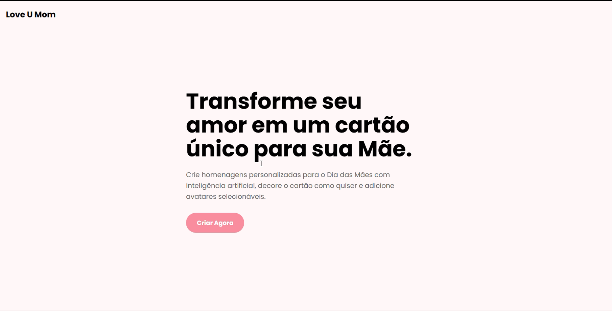
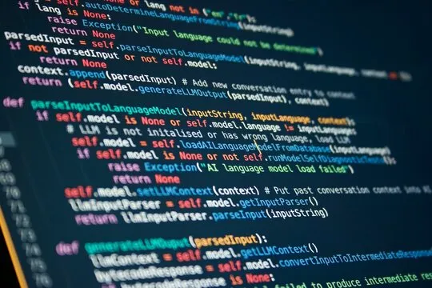
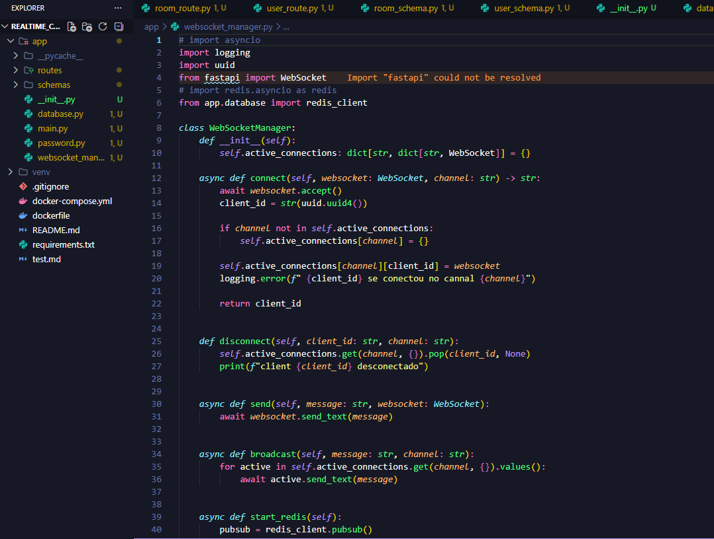

Alice Vital
Back-End Developer
Baixar currículo
Back-End Developer
Baixar currículo
Oi! Meu nome é Alice e sou formada no curso de Análise e Desenvolvimento de Sistemas. Gosto muito da área da tecnologia desde quando era criança e isso me motivou a estudar bastante sobre diversas ramificações da área. Tenho experiencia com Desenvolvimento Backend onde pude aplicar tecnologias como Python, FastAPI, persistência de dados com MongoDB, autenticação com JWT, RabbitMQ, Redis para cache, versionamento de código e conteinerização com Docker.
Durante minha graduação, desenvolvi uma base sólida em áreas fundamentais da computação, como Algoritmos, Lógica de Programação, Estrutura de Dados e Banco de Dados. Ao longo do curso, também aprofundei conhecimentos em Desenvolvimento Web e Mobile, além de estudar temas avançados como Inteligência Artificial, Processamento de Linguagem Natural e Redes de Computadores.
Atualmente, desenvolvo projetos pessoais com foco em aprimorar meus conhecimentos na programação. Tenho estudado a linguagem Ruby e seu framework Ruby on Rails, também tenho bastante interesse em atuar com JavaScript e TypeScript, tanto no backend como no frontend. Me dedico aos estudos e aplicações práticas buscando construir soluções mais robustas, escaláveis e bem estruturadas.

 Python
Python
 FastAPI
FastAPI
 RabbitMQ
RabbitMQ

Socket.io MySQL
MySQL
 SQLite
SQLite

Node.js Docker
Docker
 Postman
Postman

React.js Git
Git
 DBeaver
DBeaver

GitHub AWS
AWS

Jogo web onde você tem 5 chances de acertar a palavra do dia, criado com FastAPI e JavaScript onde as informações são salvas no Local Storage
ver repositório do WordsPlataforma de gerenciamento de pagamentos utilizando FastAPI, Postgres, SQLAlchemy, Alembic, Docker e Google Clould.
ver repositório do PayFlow
O TasksHub é uma plataforma full stack para gerenciamento de tarefas pessoais e compartilhadas. O projeto foi desenvolvido com React, Vite, JavaScript e CSS no frontend, e Python, Django e Django REST Framework no backend, utilizando JWT para autenticação, PostgreSQL em produção, Pytest e Selenium para testes, Docker para conteinerização, GitHub Actions para integração contínua e Render para deploy.
ver repositório do taskshub
Uma plataforma web que utiliza inteligência artificial para criar cartões personalizados de Dia das Mães, construída para minha participação do Hackathon do SDP. Feita com Frontend em HTML, CSS e JavaScript e Backend com FastAPI e Integração da API da Inteligência Artificial Groq.
Destaque: Esse projeto recebeu menção honrosa na competição.
ver repositório do Lov U Mom
Backend do jogo Mines, inspirado em jogos de cassino. Feito com FastAPI, WebSockets, RabbitMQ e Docker, possibilita apostas, valida jogadas em tempo real e garante desempenho robusto, com hospedagem no Render.
ver repositório do Mines-Back
Sistema de recomendação, uma API que sugere conteúdos/produtos com base no comportamento do usuário.(em andamento)
ver repositório do Matchy
Backend de chat em tempo real com FastAPI, websockets para gerenciar as conexões dos usuários, JWT para autenticação dos usuários, conteinerização com Docker e persistência dos dados com Mongodb. Esse projeto foi de senvolvido com mais 2 integrantes, o fluxo de trabalho foi acompanhado pelo Jira, para facilitar a comunicação e o trabalho em equipe.
ver repositório do Realtime ChatAlém de desenvolver projetos, gosto de participar de eventos de tecnologia, inovação e comunidades dev. Esses encontros me permitem acompanhar tendências do mercado, ampliar minha rede de contatos e compartilhar experiências com outros profissionais da área.